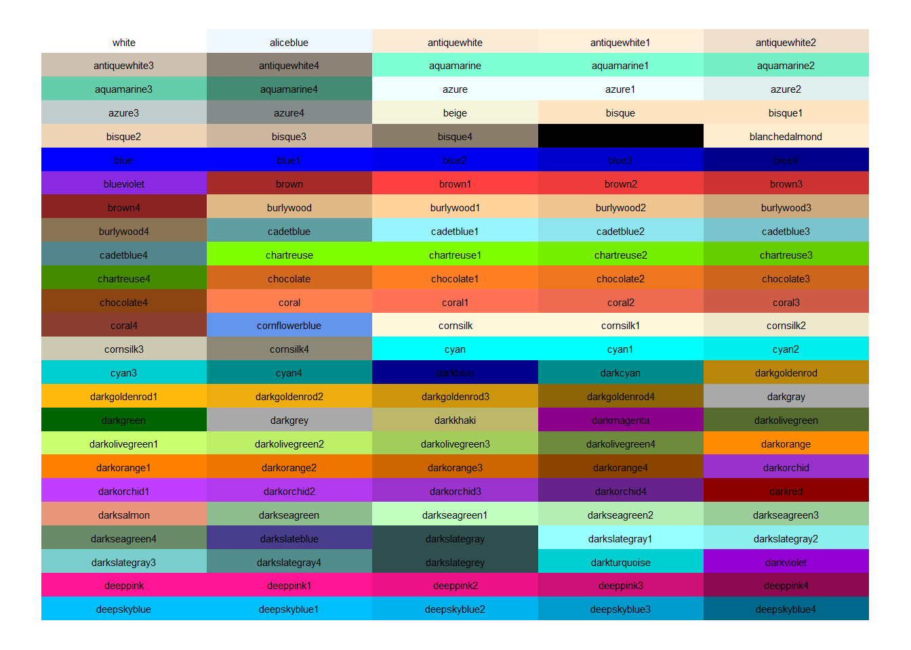
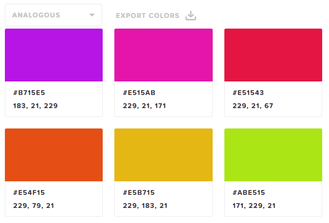
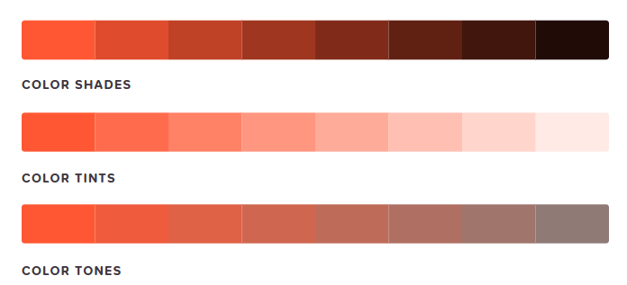
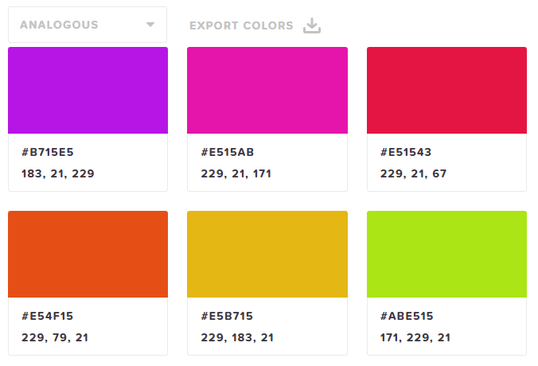
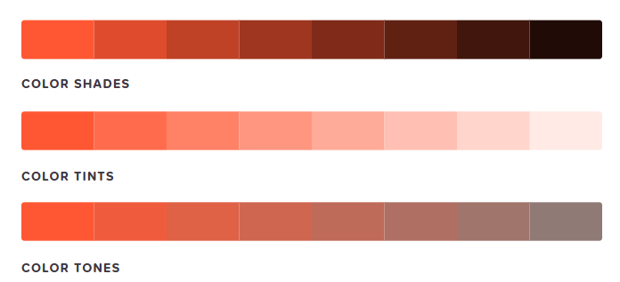
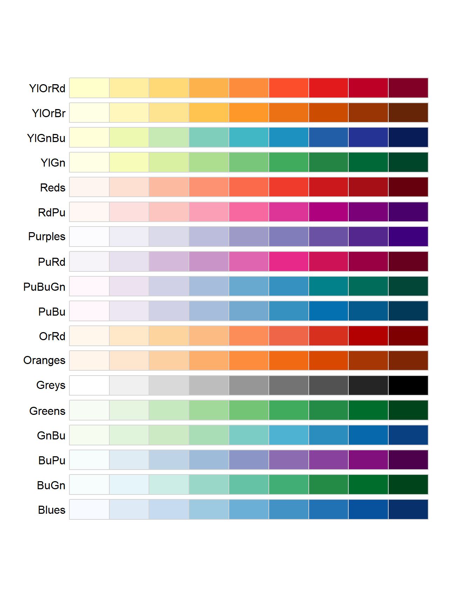
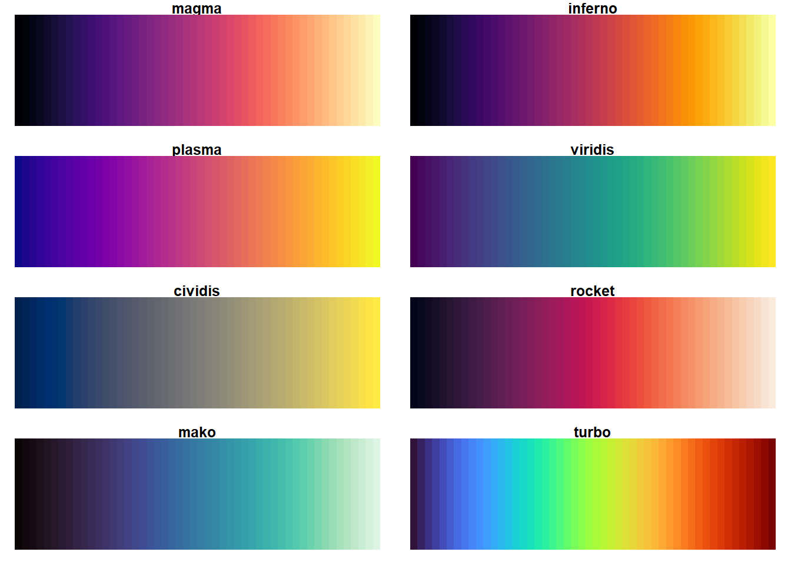
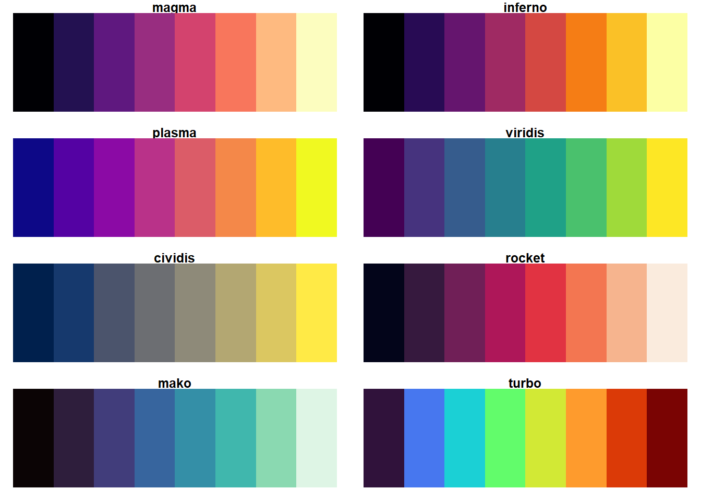
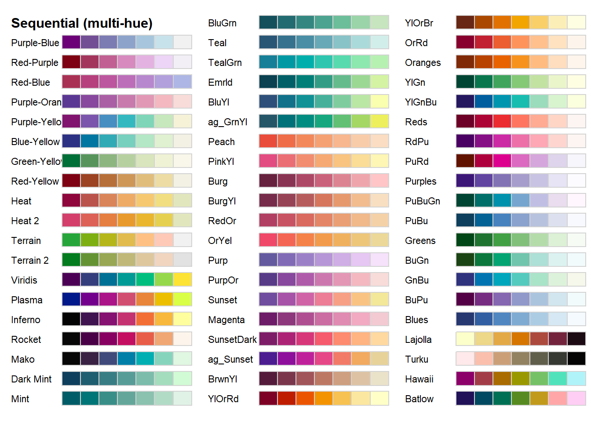

Picking Colors & Palettes
In this section I’ve separated out how to choose individual colors & palettes. This is a repository of things about how to choose color that I found helpful but does not go into details on how specifically to adjust color within a graph.
1 Picking Individual Colors
R understands many different colors that can be specified with a color name (you just have to know the color name!). The colors() command will list ALL colors, but it doesn’t show you those colors.
colors()[1:10]## [1] "white" "aliceblue" "antiquewhite" "antiquewhite1"
## [5] "antiquewhite2" "antiquewhite3" "antiquewhite4" "aquamarine"
## [9] "aquamarine1" "aquamarine2"Here is a sample table of colors with their color name (hard to read, but just for illustrative purposes the variety of colors - and this just scratches the surface)!

The above table is hard to read, so I love how this website groups & orders all colors, providing not only the name of the color but also the hex code.

1.1 Color Picker Website
This color picker allows you to pick any color, gives the hex code and the rgb codes. If you don’t know a color name - not to worry! R understands hex codes and rgb codes.

Some things I really like about this website:
It goes through some color theory,
gives additional color options based on your color theory elements
and provides sequential palette ideas based on shades, tints, and tones of a color of your choice.
  
 
2 Palettes of Color
What is a palette? A palette of colors is a pre-selected collection of colors you can use to plot.
This chapter created a function to plot any manual palette of colors you choose.
Although you can manually select colors you wish, there are MANY different pre-made palettes - and I imagine they will just continue to keep making more. This will never be an exhaustive list - but at the time of writing this is a collection of several, but I currently tend toward manual, brewer, and viridis palettes.
2.1 Brewer
The Brewer palettes have some commands where you can see all the palettes (examples below). I like how Jose M Sallan put things together in this post. The palettes look great, are organized well, and nicely labeled so you know how to use a specific palette in your code.
Here are a few examples of the display functions that show some of the colorblind friendly palettes.
display.brewer.all(type="seq", colorblindFriendly = TRUE)
display.brewer.all(type="div", colorblindFriendly = TRUE)
display.brewer.pal(n = 8, name = 'Dark2')
A site that Sallan mentions is this one where you can see the Brewer palettes in action.
2.2 Viridis
Jose M Sallan does it again with an awesome display of the viridis palettes.
2.2.1 Continuous Scale

2.2.2 Discrete Scale

This site allows you to pick the number of categories and viridis palette & gives rgb and hex codes for the colors used.
This post goes over some documentation and images that compare the viridis scale to other commonly used color scales with different color deficiencies.
Here is the ggplot2 page of viridis palette uses.
2.3 Colorspace
Read more about colorspace palettes. They have several commands that allow for interactive color-choosing experiences within your Shiny app and occasionally your html viewer.
#hcl_palettes("qualitative", plot = TRUE)
#hcl_palettes("sequential (single-hue)", n = 7, plot = TRUE)
hcl_palettes("sequential (multi-hue)", n = 7, plot = TRUE)
#hcl_palettes("diverging", n = 7, plot = TRUE)
# Pop up selector
#choose_palette()
#demo("viridis", package = "colorspace")2.4 Paletteer
Paletteer aims to be a repository of all palettes, and can display in this way:
paletteer_d("awtools::mpalette")## <colors>
## #017A4AFF #FFCE4EFF #3D98D3FF #FF363CFF #7559A2FF #794924FF #8CDB5EFF #D6D6D6FF #FB8C00FF#paletteer_d("awtools::ppalette")
#paletteer_d("nord::frost")The color palette finder is another way to not only see a snippet of the palette (in the drop down menu) but also see the palette applied to several types of graphs (to see the palette in action!). Alternatively, R Charts shows snippets of 497 palettes.

3 Accessibility
An additional resource that I’ve found helpful is this website that allows you to upload your image and see how it looks with different color deficiencies.